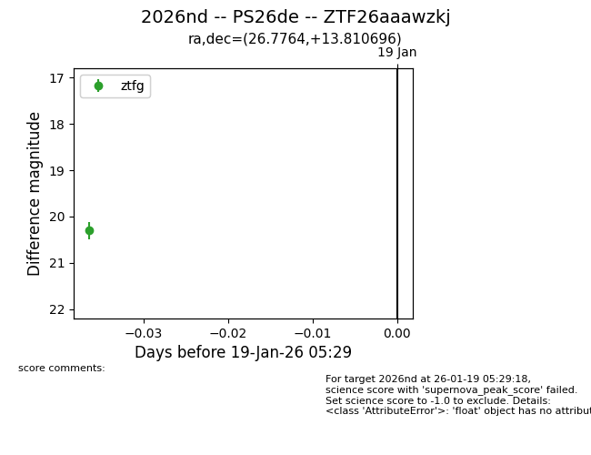
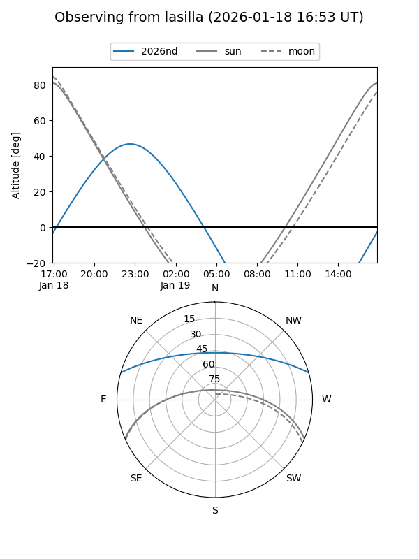
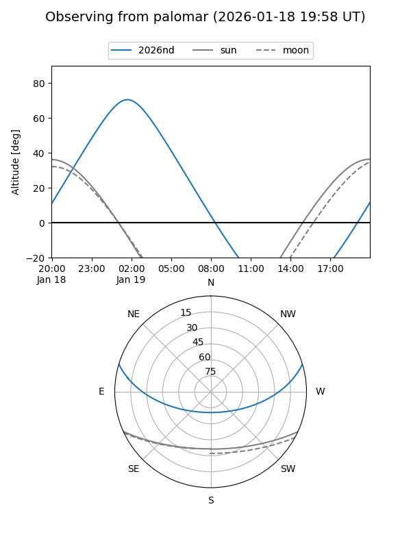

2026nd
Target 2026nd at 2026-01-19 05:30
Aliases and brokers:
FINK: link
Lasair: link
ALeRCE: link
TNS: link
YSE: link
alt names
ZTF26aaawzkj (ztf,fink_ztf)
2026nd (tns,yse)
PS26de (panstarrs)
Coordinates:
equatorial (ra, dec) = 26.7764,+13.81070
equatorial (HMS+DMS) = 01:47:06.34,+13:48:38.51
galactic (l, b) = (142.9161,-46.88961)
Flags:
Photometry:
last ztfg=20.30
1 ztfg detections
Lightcurve

Visibility


Additional plots